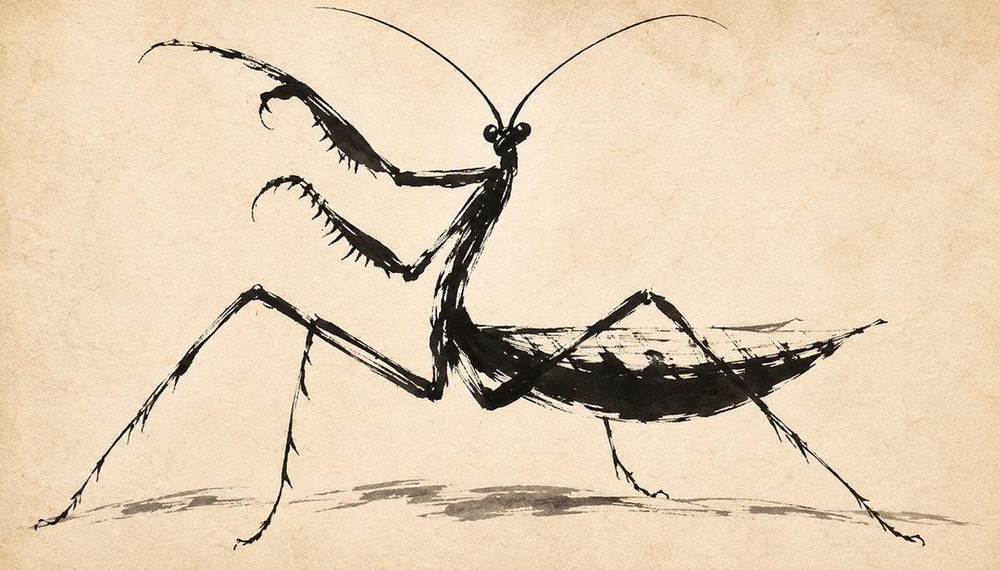

Device
Bridge
MouseJack dongle
nRF52840 · LOGITacker · not connected
Plug it in, tap Find dongle, then tap the dongle row. Once it is linked, Scan what it hears lists the devices it can see.
Send a command
One command per send. The dongle takes them one at a time, so there is nothing to chain — pick or type one, Send, read the answer.
Injection script
Build one by hand
Import capture
Bring in a handshake from another tool — a .22000 list or a
capture file (.pcap / .cap / .pcapng). No device needed; the search runs on the bridge.
Settings
Display
The label names the theme you get by pressing it: ink is the
dark default, paper is the light one. The choice is kept between sessions.
Reset
Stops anything running, disconnects from the board and throws
away the session — the capture, what the analyzer read, the plan. Your bridge
settings, the karma and mana settings and the presets survive it.